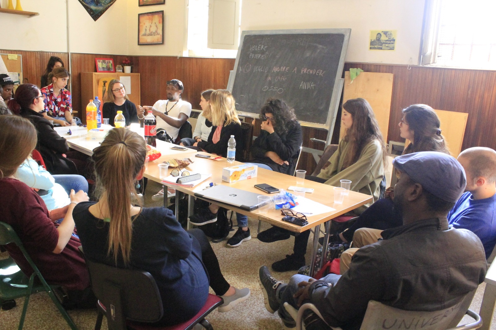

Laboratorio di tandem linguistico
Corsi e assistenza linguistica per promuovere la conoscenza delle lingue, l'avvicinamento a diverse culture e il dialogo tra persone di diverse provenienza. Tutti i corsi sono seguiti da volontari madrelingua e/o persone con ottima padronanza della lingua. La particolarita dei nostri corsi e la personalizzazione delle lezioni in base alle esigenze dell'utente. Abbiamo iniziato con le seguenti lingue:
Corsi di inglese (ora del corso)
Corsi di francese (ora del corso)
Corsi di spagnolo (ora del corso)
Corso di tedesco (ora del corso)

Alfabetizzazione Informatica
Corso di alfabetizzazione informatica I :
partiamo da come accendere il computer e da come usare le funzioni di base del computer (risorse del computer, uso "write programs", apertura, strutturazione e salvataggio di documenti). Si rivolge a utenti che finora non hanno fatto uso del computer.
Corso di alfabetizzazione informatica II :
facciamo un ulteriore passo e vediamo delle modalita piu avanzate, come per esempio l'uso del computer per un lavoro di ricerca. Si naviga sul web, creando una propria casella di posta e si impara a scrivere una mail e a utilizzare strumenti come Google Drive. E possibile partecipare a entrambi i corsi.
Attivita transculturali anche per le scuole
Attraverso laboratori interculturali condividiamo le conoscenze e informazioni ideologiche tra culture per promuovere la coesione sociale e la convivenza tra cittadini, rivolgendo una parte delle nostre attivita alle nuove generazioni e alle scuole. Affrontiamo temi come il valore della transcultura e come sfruttarla, la comunicazione non-violenta e interculturale.
I nostri laboratori sono caratterizzati da attivita pienamente interattive, cioe dalla possibilita di sperimentare concretamente varie strategie per una gestione serena della convivenza e la diretta conoscenza di tradizioni e culture finora sconosciute ma ben presenti nel territorio bolognese. La messa in pratica dei laboratori viene adattata all'eta e alla composizione del gruppo e si rivolge sia ai piu piccoli sia ai giovani adulti.


Recupero e registrazione di racconti dal mondo
Utilizzando le nuove strategie di comunicazione, come social network, materiale multimediale e testimonianze scritte, raccogliamo e archiviamo racconti, tradizioni ed esperienze confrontandosi con esperti per un punto di vista antropologico e storico. Ci interessano le situazioni e eventi che caratterizzano la vita di ciascuno: il matrimonio, la morte, la nascita, un'esperienza all'estero...
Recupero e registrazione di racconti dal mondo
Il nostro programma sostiene anche chi vuole fare delle esperienze di turismo responsabile al di la dei luoghi turistici che si trovano in ogni guida turistica. La nostra squadra multinazionale mette a disposizione informazioni "su misura" riguardo il loro paese di origine per un viaggio unico. Chi viaggia attraverso la nostra rete di informazione sara pregato di condividere con noi l'esperienza vissuta con materiale video, foto e audio.
Tutto il materiale raccolto e archiviato sara reso accessibile attraverso la nostra biblioteca digitale e attraverso la partecipazione agli eventi di scambio e di condivisione.